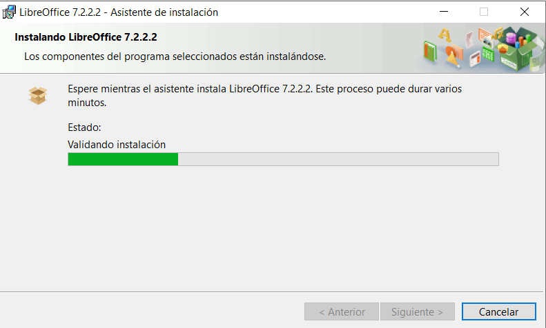

Paso1
Para descargar LibreOffice entramos en la pagina oficial y en la primera web que nos sale ya nos sale la opción de descargar ahora pulsamos ahí.

Paso2
En la ventana que se nos abre nos aparece dos tipos de LibreOffice dependiendo de para que vayamos a utilizarlo, descargaremos uno u otro y dependiendo también de la arquitectura que tengamos podremos cambiarla también.

Pulsamos en descargar la versión que necesitemos y se comenzara a descargar automáticamente.
Paso3
Una vez descargado el LibreOffice comenzamos la instalación. Pulsamos en la descarga.

Paso4
Entramos ya en el asistente de instalación. Pulsamos siguiente.

Paso5
Nos aparece ahora el tipo de instalación vamos a elegir típica para que se configure con nuestra configuración del PC.

Paso6
Ya esta preparado para instalarlo y pulsamos en instalar.

Paso7
Comienza la instalación y esperamos que se instale.
Paso8
Terminación de la instalación de LibreOffice.

Paso9
Despues de terminar la instalación solo tenemos que buscar la aplicacion LibreOffice y entrar.